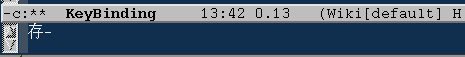

很多人绑定一些比较特殊的键的时候，都搞不清楚在
(global-set-key ... 'my-funtion)
里写些什么。特别是在 xterm 里的时候就更不知所措了。其实有一 个万无一失的办法保证你一定写对。这个办法就是：
好了，你现在就能在 minibuffer 里看到你应该写在 .emacs 的东西 了。
如果你在第1步的时候发现 Emacs 根本对你的按键没有反应，那么应 该怀疑是你的窗口管理器拦截了这个按键。比如，我的 FVWM 设置把 C-f3 设定成了打开一个 FvwmCommand, 所以 Emacs 接收不到这个按键。如果我要绑定一个函数到 C-f3, 我必须 让 FVWM 放过 C-f3。
其实上面的办法只能让你绑定一个已有的前缀。你有可能想绑定一个 save-buffer 到 "C-c C-w C-b a"。上面的办法就不灵了。我们必须 使用另外的办法：
(global-set-key (kbd "C-c C-w C-b a") 'save-buffer)
上面的那个 "C-c C-w C-b a" 是自动把 "C-c C-w", "C-c C-w C-b" 都定义成了一个 prefix-command. 你可以这样看到它们：
现在你清楚的看到了 "C-c C-w", "C-c C-w C-b" 都是 prefix command 吧？
(global-set-key (kbd "C-z C-c C-w b") 'find-file)
出现错误：(error "Key sequence C-z C-c C-w b uses invalid prefix characters")
所以你必须事先把第一个键设定为 prefix:
(define-prefix-command 'ctl-z-map) (global-set-key (kbd "C-z") 'ctl-z-map)
然后再用
(global-set-key (kbd "C-z C-c C-w b") 'find-file)
就行了。"C-z C-c" 和 "C-z C-c C-w" 都会自动被定义为 prefix command.
现在我举一个例子来说明 prefix command 是如何工作的。我们可以 把中文的 存盘 两个字绑定到save-buffer. 这样你用中文输入法 敲入“存盘”两个字时，就可以把当前 buffer 保存起来。
(define-prefix-command '存-map) (global-set-key (kbd "存") '存-map) (define-key 存-map (kbd "盘") 'save-buffer)
有趣吧？你可以猜到这里面是怎么回事吧？太简单了是不是？当你输 入“存”的时候，看到 minibuffer 是这样：

这是因为我们把“存”这个字绑定到了 存-map 这个 prefix-command. 当读到“存”的时候，Emacs 就会等待下一条命令， 这个命令是定义在 存-map 这个 map 里的。它读到“盘”，就会执 行 save-buffer 了。
不过注意，你真的要在文档里输入“存盘”两个字就得先打 C-q 了。 刚才我就打了好多次 C-q，真累啊。还是用一些不常用的词组比较好， 或者加一个 ctrl 什么的前缀，就像这个，"C-z 存盘"。
(define-prefix-command 'ctl-z-map) (global-set-key (kbd "C-z") 'ctl-z-map) (define-key ctl-z-map (kbd "存盘") 'save-buffer)
看我们更 bt 一点:
(define-prefix-command 'ctl-z-map) (global-set-key (kbd "C-z") 'ctl-z-map) (define-key ctl-z-map (kbd "给我存盘啦！") 'save-buffer)
嗨哟！yes sir!!
define-key 会自动建立很多 prefix command. 不过自己显式用 define-prefix-command 定义前缀命令有一个好处，就是你可以在你 的 prefix 里再方便的定义更多的命令，而不用把整个前缀都写一遍。
(define-prefix-command 'ctl-z-map)
(define-prefix-command '存-map)
(define-prefix-command '盘-map)
(global-set-key (kbd "C-z") 'ctl-z-map)
(define-key ctl-z-map (kbd "存") '存-map)
(define-key 存-map (kbd "盘") '盘-map)
(define-key 盘-map (kbd "！") 'save-buffer)
(define-key 盘-map (kbd "到") 'write-file)
(define-key 盘-map (kbd "退出")
(lambda ()
(interactive)
(save-buffer)
(kill-emacs)))
这样，到了“C-z 存盘-” 这个时候，我们定义了3个分支：
自定义 prefix command 的另外一个更大的好处就是：你可以修改最 上层对 prefix command 的绑定，从而修改许多键的绑定。比如，我 们可以把 “存盘” 轻而易举的改成 “保存”：
(define-key ctl-z-map (kbd "保存") '盘-map)
这样一来， “C-z 保存！” ，“C-z 保存到” ， “C-z 保存退出” 就分别有了 “C-z 存盘！” ， “C-z 存盘到” 和 “C-z 存盘退 出” 的含义了。